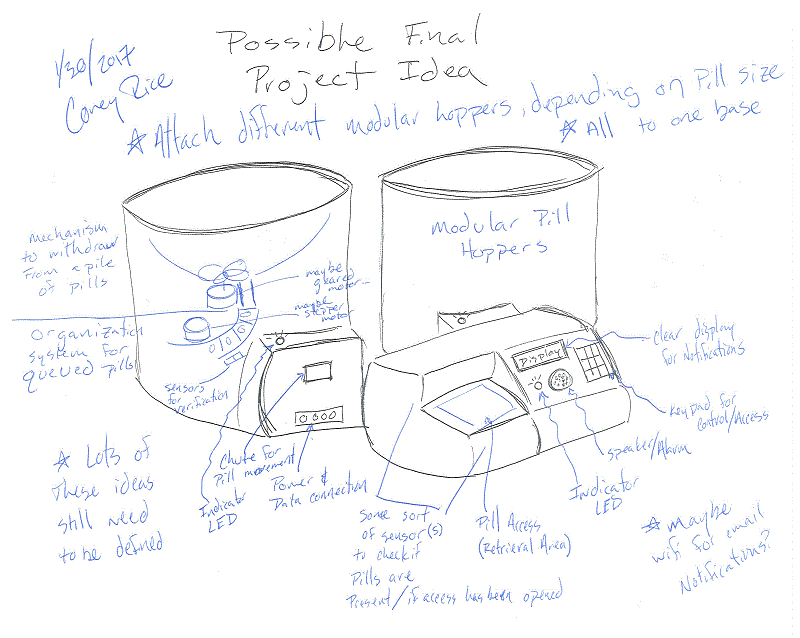

Looking for a need to meet...
I spent the past week asking anyone who would be kind enough to respond, what to they need in their life? A wide range of people had an even wider range of answers, but I was eventually able to settle on one.
My grandmother is very old, and she is nearing the end of life. As she fades away, one of the things that was most concerning to the family was her ability to take care of herself at home. She was on many different medications and, with a failing memory, we could not be sure she was taking the correct pills.
My plan stems from this core problem: keeping tabs on the health of our elder loved ones.
I want to develop a device that will be able to manage and track an inidividual's medications. There are several electronic pill dispensers on the market, but I want to make one that will work well for a person living alone. Ideally, it would help the patient manage the time and amount of medications that they need to take, as well as inform loved ones of this status. There are already similar items on the market, but developing a custom solution that simplifies the process even further would be ideal.
